Hello! I’m George, a PhD student researcher at the University of Birmingham, under the supervision of Dan Ghica and Miriam Backens!
I am a member of the Theory Group.
University: g.j.kaye at cs.bham.ac.uk
Where to find me: Office 244 (Desk J), School of Computer Science, University of Birmingham
My primary research interests are in graphical calculi for compositional systems and the lambda calculus using monoidal categories, and reasoning about these structures diagrammatically and by using graph rewriting techniques. I am also interested in general programming languages and compilers. On a more practical side, I enjoy making and experimenting with visualisers for various theoretical concepts.

Currently I am working on a diagrammatic semantics for digital circuits, motivated by the work of Ghica and Jung [1] [2]. I am using a variant of hypergraphs that are a sound and complete calculus for symmetric traced monoidal categories. The ultimate aim of this project is to define an automatic rewriting system for these hypergraphs that we can use as an effective and efficient operational semantics for digital circuits.
When I’m not researching, I play the piano and go on adventures usually involving trains, canals or both. I occasionally take photos of pretty things and put them on Instagram. If you want something less pretty, here are some pictures of me! I also (very rarely) use Twitter.
I’m currently School of Computer Science Cookie Break admin! The Cookie Break is the School’s longest running social event and it’s an honour to be in charge of such an esteemed tradition.
You might want to read my CV.
Diagrammatic semantics for digital circuits [Visualiser] [Very basic talk]
Defining an operational semantics for digital circuits using hypergraphs.
A visualiser for linear lambda-terms as rooted 3-valent maps [Page]
A set of tools for the representation of lambda terms as their corresponding rooted maps. Developed for my MSci final year project under the supervision of Noam Zeilberger.
A visualiser for linear lambda-terms as rooted 3-valent maps
CLA 2019 July 1-2, 2019 [Slides]
ACT 2020, The internet July 6-10, 2020
SYCO 7, Estonia March 30-31, 2020
MGS Christmas Seminar December 18, 2019
SYCO 6, Leicester December 16-17, 2019
CLA 2019, Versailles July 1-2, 2019
Compilers & Languages University of Birmingham, teaching assistant [OCaml tutorial]
Mathematical Foundations of Computer Science University of Birmingham, teaching assistant